Tema 4. Capa de enlace¶
En el Tema 3 dejamos montado el armario: tomas, panel, latiguillos y un switch con todos sus pilotos encendidos. Que el piloto esté verde solo dice que la capa física funciona, es decir, que hay señal en el cable. Lo que pasa después, cuando el PC tiene algo que enviar, corresponde a la capa de enlace de datos (capa 2): encapsula los datos en tramas, les añade las direcciones MAC de origen y de destino, comprueba que no lleguen dañadas y decide cuándo se puede transmitir. El switch es el dispositivo que opera en esta capa, así que entender la trama es entender qué hace el switch con cada una.
En el taller esto se comprueba en la práctica. Un PC con el cable bien crimpado puede no comunicarse porque las tramas llegan con errores y el switch las descarta. Un cable de más entre dos switches, que parece inofensivo, puede dejar sin servicio toda la red del aula en segundos por un bucle. Al acabar el tema sabrás explicar las dos situaciones y cómo se evitan.
Primera clase
Empieza por el cuestionario inicial. No hace falta haber leído el tema entero: sirve para ver qué traes antes de estudiar. Entrégalo en Aules antes de mirar el Autocheck.
Cómo leerlo
Lee cada apartado completo: primero el párrafo (qué es, para qué sirve y un ejemplo), después la tabla o la figura, y al final los errores frecuentes. No estudies solo las tablas. Los términos marcados enlazan al glosario. Cuando acabes el tema, haz el Autocheck.
Propuesta didáctica¶
Trabajamos los RA1 y RA4 del módulo Redes de área local (0225):
RA1. Reconoce la estructura de redes locales cableadas analizando las características de entornos de aplicación y describiendo la funcionalidad de sus componentes.
RA4. Instala equipos en red, describiendo sus prestaciones y aplicando técnicas de montaje.
Criterios de evaluación (selección)¶
RA1
- CE1a (clave): Se han descrito los principios de funcionamiento de las redes locales.
- CE1c: Se han descrito los elementos de la red local y su función.
RA4
- CE4g (clave): Se han identificado los protocolos.
- CE4h: Se han configurado los parámetros básicos.
VLAN
Las VLAN (CE4j) se desarrollan en el Tema 6. Aquí solo aparecen como el campo opcional de 4 bytes de la trama y como la forma de dividir un switch en varios dominios de difusión.
Contenidos¶
- Funciones de la capa de enlace y alcance de la trama: de un equipo a su vecino, salto a salto.
- Subcapas LLC (IEEE 802.2) y MAC (IEEE 802.3 y 802.11).
- Trama Ethernet: campos, tamaño mínimo y máximo; detección de errores con CRC y el campo FCS.
- Direcciones MAC: estructura, OUI, unicast, multicast y broadcast; cómo ver la tuya.
- Acceso al medio compartido: particionado, turnos y contienda; CSMA/CD y CSMA/CA; half y full dúplex.
- El switch por dentro: aprender, filtrar, reenviar e inundar; métodos de conmutación; dominios de colisión y de difusión.
- Bucles de capa 2: STP y RSTP. Agregación de enlaces con EtherChannel (visión breve).
Programación de aula (orientativa)¶
| Sesiones | Contenidos | Actividades |
|---|---|---|
| 1 | Presentación, cuestionario inicial, capa de enlace, LLC/MAC, trama y CRC | Cuestionario |
| 2 | Direcciones MAC y funcionamiento del switch | AC401, AC403 |
| 3–4 | Acceso al medio: CSMA/CD, CSMA/CA y dúplex | AC402 |
| 5–6 | Métodos de conmutación; dominios de colisión y de difusión | PR401 |
| 7–8 | Bucles, STP y EtherChannel | AC404 |
| 9–10 | Packet Tracer: tabla MAC y STP (se termina en casa) | PR402 |
| 11 | Repaso y Autocheck | — |
Cuestionario inicial¶
Antes de empezar — responde con lo que sepas
- ¿Qué función cumple la capa de enlace en el modelo OSI?
- ¿Qué es una trama y en qué se diferencia de un paquete?
- ¿Qué es una dirección MAC? ¿Sabrías encontrar la de tu ordenador?
- ¿Qué crees que hace un switch cuando recibe una trama para un equipo que todavía no conoce?
- ¿Qué diferencia hay entre un hub y un switch?
- ¿Por qué hoy casi no hay colisiones en una red cableada?
- ¿Cómo sabe el receptor que una trama ha llegado dañada?
- ¿Qué pasaría si conectas dos switches entre sí con dos cables a la vez?
- ¿Qué es una VLAN? (solo la idea; el detalle va en el Tema 6)
Entrega tus respuestas en Aules como tarea del cuestionario inicial antes de mirar el Autocheck del final del tema. Las soluciones no están aquí a propósito: primero entregas, después contrastas.
Qué hace la capa de enlace¶
La capa física, que vimos en el Tema 2, solo se encarga de transmitir los bits: unos y ceros convertidos en señal eléctrica, luz o radio. La capa de enlace de datos organiza esos bits para que tengan sentido. Agrupa los datos que le pasa la capa de red en bloques llamados tramas, les añade una cabecera con la dirección de quien envía y de quien recibe, y añade al final un código de comprobación de errores (FCS). Si el medio lo comparten varios equipos, además decide quién puede transmitir en cada momento.
Hay una idea que conviene fijar desde el principio: la trama solo viaja entre dos equipos vecinos, es decir, conectados al mismo enlace. Cuando tu PC envía algo a un servidor de Internet, el paquete IP va de extremo a extremo sin cambiar sus direcciones, pero la trama que lo transporta se rehace en cada router. El switch, en cambio, no fabrica tramas nuevas: las reenvía tal como llegan, porque trabaja dentro de la misma LAN. Por eso decimos que la capa 2 se ocupa del salto y la capa 3 del camino completo.
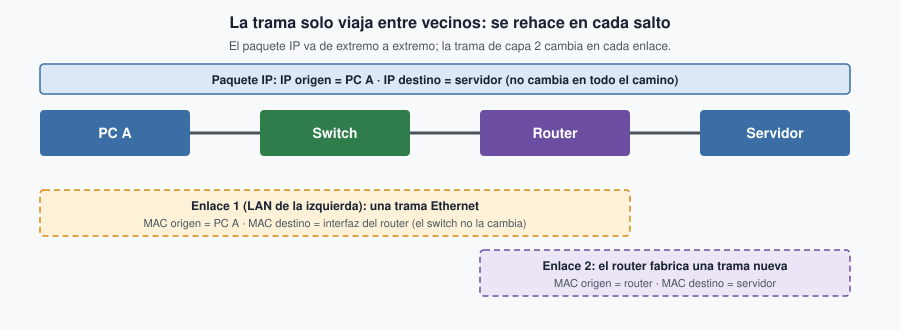
Las funciones que se atribuyen a la capa de enlace son estas:
- Entramado. Delimitar dónde empieza y dónde acaba cada trama, para que el receptor no confunda los datos de una con los de la siguiente.
- Direccionamiento físico. Identificar con la dirección MAC qué tarjeta envía y cuál debe recoger la trama.
- Detección de errores. Calcular un código de control que permita descartar las tramas dañadas por ruido o interferencias.
- Control de acceso al medio. Ordenar quién transmite cuando varios equipos comparten el mismo medio.
- Control de flujo. Evitar que un emisor rápido desborde a un receptor más lento (en Ethernet, mediante tramas de pausa en full dúplex).
Ejemplo de aula. Cuando haces ping del PC del taller al router del aula, la petición sale de tu NIC dentro de una trama cuya MAC de destino es la del router. El switch del armario lee esa MAC, mira por qué puerto tiene que salir y la reenvía sin tocarla. Si luego el router la manda a Internet, la trama que sale por su otra interfaz ya es otra, con otras MAC.
Errores frecuentes
Pensar que la dirección MAC de destino es la del equipo final aunque esté en otra red. Si el destino está fuera de tu LAN, la MAC de destino es la del router (tu puerta de enlace). Confundir trama y paquete: la trama es la PDU de la capa 2 y el paquete, la de la capa 3, que viaja dentro de ella.
Subcapas LLC y MAC¶
En las redes locales, el IEEE (Institute of Electrical and Electronics Engineers) divide la capa de enlace en dos subcapas. La idea es separar lo que es común a cualquier tecnología de lo que depende del medio concreto.
La subcapa LLC (Logical Link Control, control de enlace lógico) es la de arriba y está recogida en la norma IEEE 802.2. Ofrece a la capa de red una interfaz única, de modo que el protocolo IP no necesita saber si debajo hay un cable Ethernet o una red Wi‑Fi. Indica qué protocolo de red va dentro de la trama y, en la práctica, la implementa el driver de la tarjeta, es decir, el software.
La subcapa MAC (Media Access Control, control de acceso al medio) es la de abajo, la más cercana a la capa física. Construye la trama con las direcciones y el código de errores, decide cuándo se puede transmitir y desempaqueta las tramas que llegan. Está grabada en el hardware de la propia NIC, y cada tecnología tiene la suya: IEEE 802.3 para Ethernet cableado e IEEE 802.11 para Wi‑Fi. Cada estándar fija a la vez su subcapa MAC y su capa física, por eso hablamos de 802.3u (Fast Ethernet, 100 Mb/s) o de 802.3ab (Gigabit sobre cobre) como si fueran «tipos de cable».
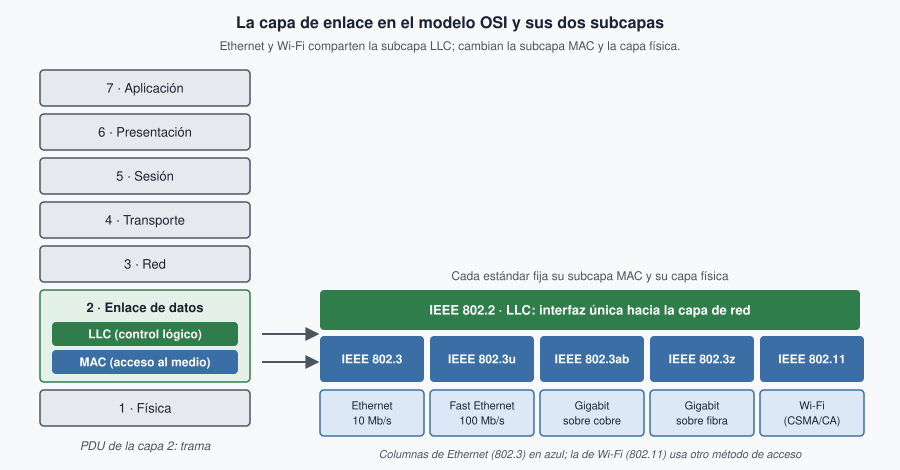
Ejemplo de aula. Tu portátil tiene dos NIC, la de cable y la Wi‑Fi. Cada una tiene su propia subcapa MAC y su propia dirección, pero el sistema operativo las trata igual: les asigna una IP y envía paquetes por la que esté conectada. Eso es posible porque por encima de las dos está la misma LLC.
Errores frecuentes
Confundir la subcapa MAC con la dirección MAC. La subcapa es una parte de la capa 2 (con sus funciones); la dirección es el identificador de 48 bits que usa esa subcapa.
La trama Ethernet¶
La trama Ethernet es el «sobre» en el que viajan los datos por la LAN. Su formato lo fija el estándar IEEE 802.3, y lo que circula hoy en casi todas las redes es la variante Ethernet II, que usa el campo de tipo para indicar qué protocolo va dentro. Conocer los campos y su tamaño es imprescindible para leer una captura de tráfico y para entender por qué el switch puede decidir tan deprisa.
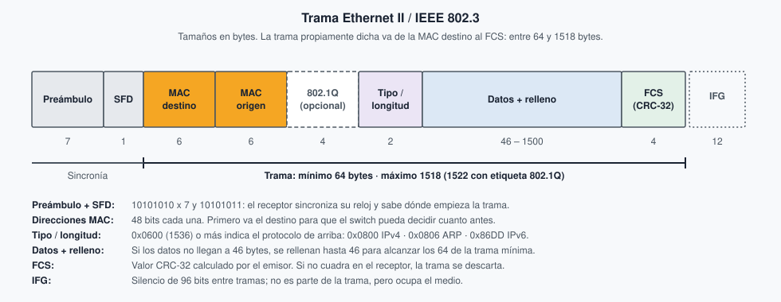
La tabla siguiente resume cada campo, su tamaño y para qué sirve.
| Campo | Tamaño | Para qué sirve |
|---|---|---|
| Preámbulo | 7 bytes | Patrón 10101010 repetido para que el receptor sincronice su reloj con el emisor |
| SFD (Start Frame Delimiter) | 1 byte | Patrón 10101011: marca que empieza la trama propiamente dicha |
| MAC destino | 6 bytes | A quién va dirigida. Va la primera para que el switch decida cuanto antes |
| MAC origen | 6 bytes | Quién la envía. El switch la usa para aprender en qué puerto está cada equipo |
| Etiqueta 802.1Q | 4 bytes (opcional) | Número de VLAN y prioridad. Solo aparece en enlaces troncales (Tema 6) |
| Tipo / longitud | 2 bytes | Si vale 0x0600 (1536) o más, indica el protocolo de dentro: 0x0800 IPv4, 0x0806 ARP, 0x86DD IPv6 |
| Datos + relleno | 46–1500 bytes | El paquete de la capa de red. Si no llega a 46 bytes, se rellena con ceros |
| FCS (Frame Check Sequence) | 4 bytes | Código CRC‑32 para detectar errores |
El preámbulo y el SFD los genera la NIC y no se cuentan como parte de la trama; por eso una captura de Wireshark empieza directamente por la MAC de destino. Entre una trama y la siguiente, además, el emisor guarda un silencio obligatorio llamado IFG (Inter-Frame Gap), de 96 bits (12 bytes), aunque el medio esté libre.
La trama tiene un tamaño mínimo de 64 bytes (de la MAC destino al FCS). Ese mínimo viene del Ethernet clásico de medio compartido: la trama tenía que durar lo suficiente como para que, si colisionaba con otra en el punto más lejano del cable, el emisor todavía estuviera transmitiendo y pudiera detectar la colisión. Lo verás con más detalle en CSMA/CD. El máximo es de 1518 bytes, con 1500 de datos como mucho; ese límite de datos se llama MTU (Maximum Transmission Unit, unidad máxima de transmisión) y es el que verás en la configuración de cualquier interfaz. Con la etiqueta de VLAN, la trama puede llegar a 1522 bytes. Algunos equipos de centro de datos admiten tramas gigantes (jumbo frames) de hasta unos 9000 bytes, pero no es estándar y todos los equipos del camino tienen que admitirlas.
Ejemplo de aula. Una petición ARP («¿quién tiene la IP 192.168.10.1?») ocupa solo 28 bytes. Como el campo de datos tiene que tener al menos 46, la NIC añade 18 bytes de relleno. Cuando la veas en Wireshark, esos ceros del final no son un error: son el relleno.
Errores frecuentes
Decir que la trama mínima es de 46 bytes (46 es el mínimo del campo de datos; la trama mínima es de 64). Sumar el preámbulo al tamaño de la trama. Pensar que el tipo 0x0800 es una dirección: es el código que dice que dentro va IPv4.
Detección de errores: CRC y FCS¶
Por el camino, un pico de ruido o una interferencia puede cambiar un bit de la trama. Para detectarlo, el emisor aplica a toda la trama un cálculo matemático llamado CRC (Cyclic Redundancy Check, comprobación de redundancia cíclica) y coloca el resultado, de 32 bits, en el campo FCS del final. El receptor repite el mismo cálculo con lo que ha recibido. Si su resultado coincide con el FCS, la trama es correcta; si no coincide, la trama está dañada y se descarta.
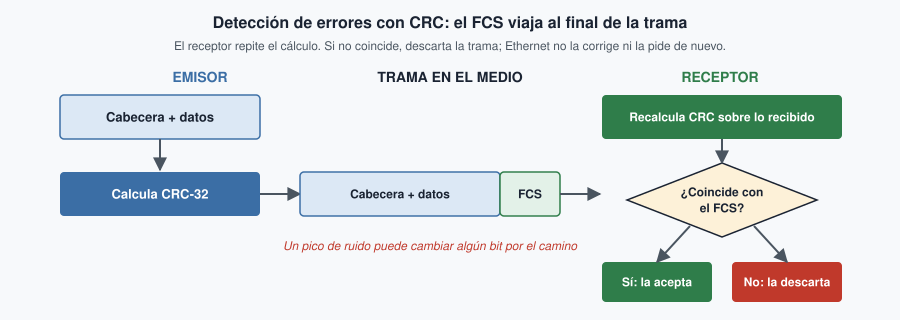
El CRC‑32 se calcula en el hardware de la NIC, es muy rápido y detecta prácticamente todos los errores que provoca el ruido, incluidas ráfagas de varios bits seguidos, con solo 4 bytes de más. Su límite es que detecta pero no corrige. Ethernet tampoco pide que se vuelva a enviar la trama: simplemente la tira. Si los datos eran importantes, será un protocolo de una capa superior, como TCP en la capa de transporte (Tema 7), el que note que falta algo y lo pida de nuevo.
Ejemplo de aula. En los switches gestionables hay un contador de errores CRC por puerto. Si en un puerto ese contador no para de subir, lo primero que se revisa es el latiguillo y la toma de ese puesto: un crimpado defectuoso o un cable aplastado por la silla producen justo este síntoma.
Para la certificación CCNA
En un switch Cisco, los errores de CRC se ven con show interfaces en la línea input errors, CRC. Muchos errores CRC en un puerto apuntan a la capa física (cable, conector o interferencias) o a un desajuste de dúplex.
Segmentación y agrupación¶
La capa de enlace también ajusta el tamaño de lo que transporta. Si los datos que llegan de arriba son más grandes de lo que admite la trama, hay que segmentarlos en varias tramas; además, si una se daña, solo se repite ese trozo y no el bloque entero. Si llegan muchos mensajes muy pequeños, a veces conviene agruparlos en una sola trama para no gastar una cabecera completa en cada uno. En Ethernet, la MTU de 1500 bytes es la que manda: lo normal es que sea la capa de red o la de transporte la que entregue los datos ya troceados a ese tamaño, de modo que cada trama lleve como mucho 1500 bytes de datos.
Direcciones MAC¶
La dirección MAC identifica cada interfaz de red dentro de la LAN. Ya la viste en el Tema 1, adaptador de red: son 48 bits escritos como 12 dígitos hexadecimales. Aquí vamos a leerla por dentro, porque de sus bits depende que una trama vaya a un solo equipo, a un grupo o a todos.
Los tres primeros bytes forman el OUI (Organizationally Unique Identifier, identificador único de organización), que el IEEE asigna a cada fabricante. Por ejemplo, 00:00:0C es un OUI de Cisco. Los tres últimos bytes los asigna el fabricante a cada tarjeta, de forma que, en principio, no hay dos interfaces con la misma MAC en el mundo. Según el sistema, la verás escrita con dos puntos (00:00:0C:12:34:56), con guiones (00-00-0C-12-34-56, en Windows) o en grupos de cuatro (0000.0c12.3456, en los equipos Cisco). Las tres formas son la misma dirección.
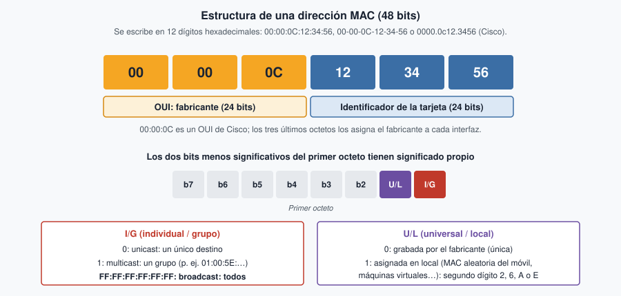
Dos bits del primer byte tienen un significado especial. El bit I/G (individual o grupo) es el menos significativo: si vale 0, la dirección es unicast y va a una sola interfaz; si vale 1, es multicast y va a un grupo de equipos. Una forma rápida de identificarlo es fijarse en el segundo dígito hexadecimal: si es impar, la dirección es de grupo. El bit U/L (universal o local) es el siguiente: si vale 0, la dirección es la que grabó el fabricante; si vale 1, se ha asignado en local, como hacen las máquinas virtuales o los móviles cuando usan una MAC aleatoria para que no se les pueda seguir de una red Wi‑Fi a otra. En ese caso, el segundo dígito es 2, 6, A o E.
Hay una dirección especial que conviene saberse de memoria: FF:FF:FF:FF:FF:FF es la dirección de difusión (broadcast). Una trama con ese destino la recogen todos los equipos del dominio de difusión, y es la que usan, por ejemplo, ARP para preguntar por una IP o DHCP para buscar un servidor (Tema 5).
| Tipo | Destino | Ejemplo |
|---|---|---|
| Unicast | Una sola interfaz | 00:00:0C:12:34:56 |
| Multicast | Un grupo de interfaces | 01:00:5E:00:00:FB (multicast IPv4) |
| Broadcast | Todas las del dominio de difusión | FF:FF:FF:FF:FF:FF |
Para ver la MAC de tu equipo tienes varias opciones. En Windows, ipconfig /all la muestra como «Dirección física» de cada adaptador, y getmac /v las lista todas. En Linux, ip link la da en la línea link/ether. En macOS, ifconfig en0 la muestra en la línea ether.
Ejemplo de aula. Si en el PC del taller ejecutas ipconfig /all, verás una MAC para el adaptador Ethernet y otra distinta para el Wi‑Fi, si lo tiene. Si buscas sus tres primeros bytes en el registro público de OUI del IEEE, sabrás qué fabricante hizo la tarjeta, aunque el PC sea de otra marca.
Errores frecuentes
Creer que la MAC no se puede cambiar: el fabricante la graba, pero el sistema operativo puede usar otra. Pensar que el switch tiene una MAC por cada equipo conectado: el switch aprende las MAC de los demás, no las inventa. Confundir multicast con broadcast: el multicast va a un grupo; el broadcast, a todos.
Acceso al medio compartido¶
Cuando varios equipos comparten el mismo medio, como un cable coaxial de los antiguos, un hub o el aire de una red Wi‑Fi, si dos transmiten a la vez sus señales se mezclan y ninguna se entiende. Eso es una colisión. Los métodos de control de acceso al medio son las reglas que evitan o resuelven ese problema, y se agrupan en tres familias.
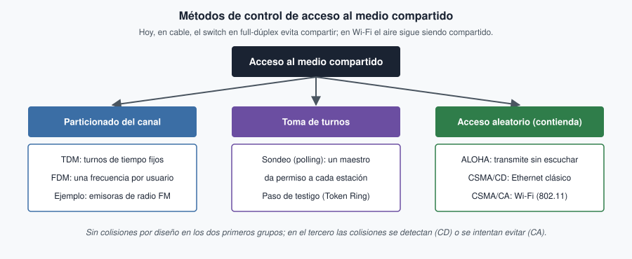
En el particionado del canal, el medio se reparte de forma fija. Con TDM (Time Division Multiplexing, multiplexación por división de tiempo) cada usuario tiene sus turnos de tiempo, como en la telefonía tradicional; con FDM (Frequency Division Multiplexing, multiplexación por división de frecuencia) cada uno tiene su frecuencia, como las emisoras de FM. No hay colisiones, pero si un usuario no tiene nada que enviar, su parte se desperdicia.
En la toma de turnos, los equipos esperan su momento. Con el sondeo (polling), un nodo maestro va dando permiso a cada estación. Con el paso de testigo (token passing) circula entre los equipos una trama especial, el testigo, y solo transmite quien lo tiene; así funcionaba la antigua red Token Ring en anillo.
En el acceso aleatorio o por contienda, cada equipo transmite cuando lo necesita y se asume que habrá colisiones de vez en cuando. El método pionero fue ALOHA, que ni siquiera escuchaba antes de transmitir. De esa idea salieron los dos métodos que importan hoy: CSMA/CD en el Ethernet clásico y CSMA/CA en Wi‑Fi.
CSMA/CD en el Ethernet clásico¶
CSMA/CD (Carrier Sense Multiple Access with Collision Detection, acceso múltiple con detección de portadora y detección de colisiones) es el método del Ethernet de medio compartido. Su nombre ya resume las reglas: escuchar antes de hablar (carrier sense), aceptar que varios comparten el medio (multiple access) y darse cuenta del choque mientras se transmite (collision detection).
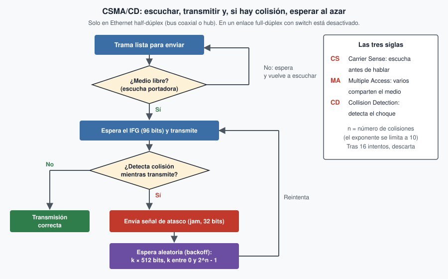
El funcionamiento es este. El equipo escucha el medio; si está ocupado, espera. Cuando queda libre, guarda el IFG y transmite. Si mientras transmite detecta una colisión, deja de enviar datos y lanza una señal de atasco (jam) de 32 bits para que todos se enteren. Después espera un tiempo aleatorio, llamado retroceso (backoff), y vuelve a intentarlo. Ese tiempo es un número entero de tiempos de ranura de 512 bits, elegido al azar entre 0 y 2ⁿ − 1, donde n es el número de colisiones que lleva esa trama (con un tope de 10 en el exponente). Así, cuantas más colisiones, más amplio es el abanico y menos probable que los dos equipos vuelvan a elegir el mismo momento. Si una trama acumula 16 intentos fallidos, se descarta.
Aquí se entiende el tamaño mínimo de trama. El tiempo de ranura de 512 bits son exactamente 64 bytes: una trama de al menos ese tamaño tarda lo suficiente en transmitirse como para que, si choca con otra en el extremo más lejano del segmento, la colisión llegue al emisor antes de que haya terminado. Si una colisión aparece después de los primeros 64 bytes, se llama colisión tardía y casi siempre indica un problema: un cable demasiado largo o un desajuste de dúplex.
CSMA/CA en Wi‑Fi¶
En una red inalámbrica, la tarjeta no puede escuchar mientras transmite, porque su propia señal tapa cualquier otra, y además dos equipos pueden no oírse entre sí aunque los dos oigan al punto de acceso. Por eso Wi‑Fi (IEEE 802.11) usa CSMA/CA (Collision Avoidance, con prevención de colisiones): en lugar de detectar la colisión, intenta evitarlo. Antes de transmitir, el equipo escucha y espera un tiempo aleatorio aunque el medio parezca libre, y cada trama recibida correctamente se confirma con un acuse de recibo (ACK). Si el ACK no llega, el emisor supone que hubo colisión y repite.
Half dúplex y full dúplex: por qué casi no hay colisiones¶
En half dúplex un equipo puede enviar o recibir, pero no las dos cosas a la vez; es el modo del hub y del cable coaxial, y ahí CSMA/CD es imprescindible. En full dúplex cada sentido tiene su propio par de hilos, de modo que el PC y el puerto del switch pueden transmitir a la vez sin pisarse. En un enlace full dúplex no puede haber colisiones, y por eso CSMA/CD está desactivado. Hoy prácticamente todos los enlaces PC–switch y switch–switch son full dúplex, y por eso CSMA/CD es sobre todo historia… y pregunta de examen.
Ejemplo de aula. Si un extremo del enlace está configurado a mano en full dúplex y el otro se ha quedado en half dúplex, el enlace funciona, pero va mal: el lado half dúplex detecta colisiones, sobre todo tardías, y los contadores de errores suben. Es el desajuste de dúplex (duplex mismatch), y se arregla dejando los dos extremos en autonegociación.
Errores frecuentes
Decir que el switch «usa CSMA/CD» en sus puertos: en full dúplex no se usa. Pensar que CSMA/CA elimina las colisiones: las hace menos probables, pero no las elimina. Creer que el retroceso es un tiempo fijo: es aleatorio, y por eso funciona.
El switch por dentro¶
En el Tema 3 montaste el switch en el rack; ahora vamos a ver cómo decide. El switch es un equipo de capa 2 que reenvía cada trama según su MAC de destino, y para eso mantiene una tabla de direcciones MAC, también llamada tabla CAM (Content Addressable Memory), que relaciona cada MAC con el puerto por el que se llega a ella.
Aprender, filtrar, reenviar e inundar¶
El switch empieza con la tabla vacía y la rellena solo, mirando el tráfico. Con cada trama que recibe hace dos cosas, siempre en el mismo orden. Primero aprende: lee la MAC de origen y anota que ese equipo está detrás del puerto por el que ha entrado la trama (si ya lo tenía, refresca la entrada). Después decide con la MAC de destino:
- Si el destino es broadcast o multicast, inunda: copia la trama por todos los puertos menos por el de entrada.
- Si el destino es unicast pero no está en la tabla, también inunda. Es una inundación por desconocimiento: cuando el destino conteste, el switch aprenderá dónde está.
- Si el destino está en la tabla y es otro puerto, reenvía la trama solo por ese puerto.
- Si el destino está en la tabla y es el mismo puerto por el que ha entrado, filtra: la descarta, porque el destino ya la ha recibido por su lado (pasa, por ejemplo, cuando detrás de ese puerto hay un hub con varios equipos).
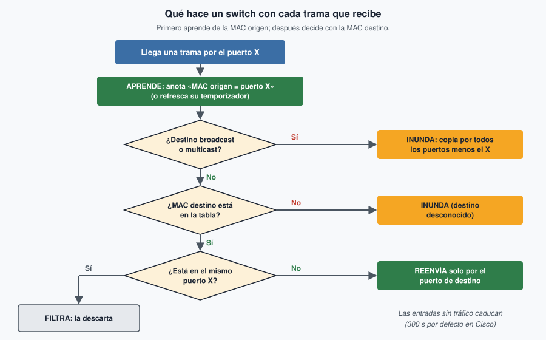
Las entradas de la tabla no son eternas. Si de una MAC no llega tráfico durante un tiempo, el tiempo de envejecimiento (aging time), que en los switches Cisco es de 300 segundos por defecto, la entrada se borra. Así, si cambias un PC de puesto, el switch se adapta solo en cuanto ese PC vuelve a transmitir.
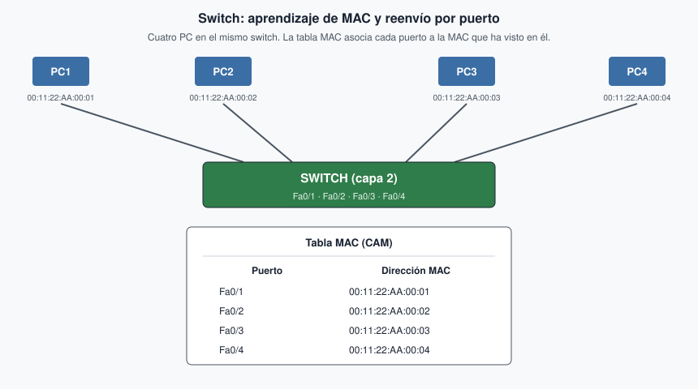
Ejemplo paso a paso. Tomemos el switch de la figura, con PC1 en Fa0/1, PC2 en Fa0/2, PC3 en Fa0/3 y PC4 en Fa0/4, recién encendido y con la tabla vacía.
| Paso | Trama | Qué aprende | Qué hace con la trama |
|---|---|---|---|
| 1 | PC1 → PC3 | PC1 está en Fa0/1 | No conoce a PC3: inunda por Fa0/2, Fa0/3 y Fa0/4 |
| 2 | PC3 → PC1 | PC3 está en Fa0/3 | Conoce a PC1: reenvía solo por Fa0/1 |
| 3 | PC2 → FF:FF:FF:FF:FF:FF |
PC2 está en Fa0/2 | Broadcast: inunda por Fa0/1, Fa0/3 y Fa0/4 |
| 4 | PC1 → PC2 | Refresca PC1 en Fa0/1 | Conoce a PC2: reenvía solo por Fa0/2 |
Fíjate en que PC4 todavía no aparece en la tabla, aunque ha recibido tres tramas: el switch aprende de lo que un equipo envía, no de lo que recibe.
Para la certificación CCNA
La tabla se consulta con show mac address-table y se vacía con clear mac address-table dynamic. Las entradas que aprende el switch aparecen como DYNAMIC. Lo practicarás en la PR402.
Métodos de conmutación¶
No todos los switches esperan lo mismo antes de reenviar una trama. Con almacenamiento y reenvío (store-and-forward), el switch recibe la trama entera, comprueba el FCS y solo la reenvía si es correcta; añade algo de retardo, pero no propaga tramas erróneas, y es lo habitual en los switches actuales. Con corte (cut-through), el switch empieza a reenviar en cuanto ha leído la MAC de destino; es el más rápido, pero puede propagar tramas dañadas, porque cuando llega el FCS la trama ya ha salido. El método libre de fragmentos (fragment-free) es un término medio: espera a los primeros 64 bytes, que es donde aparecen los restos de una colisión, y luego reenvía.
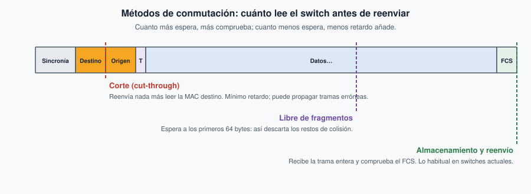
Dominios de colisión y de difusión¶
Los dominios ya los contaste en el Tema 1; ahora puedes explicar por qué salen así. Un dominio de colisión es el conjunto de interfaces que pueden chocar entre sí: el hub repite la señal por todos sus puertos y forma uno solo, mientras que el switch, que reenvía tramas completas por un puerto concreto, abre un dominio por puerto (y en full dúplex ni siquiera hay colisiones). Un dominio de difusión es el conjunto de interfaces a las que llega una trama de broadcast: como el switch inunda los broadcast por todos sus puertos, todos sus equipos están en el mismo dominio. Solo el router, que no reenvía broadcast de una interfaz a otra, o las VLAN del Tema 6, lo dividen.
| Equipo | Capa | Dominios de colisión | Dominios de difusión |
|---|---|---|---|
| Hub | 1 | Uno para todos sus puertos | No los divide |
| Switch | 2 | Uno por puerto | No los divide (salvo VLAN) |
| Router | 3 | Uno por interfaz | Uno por interfaz |
Errores frecuentes
Decir que el switch aprende de la MAC de destino: aprende de la de origen. Pensar que «inundar» es un fallo: es el comportamiento normal con destinos desconocidos y con broadcast. Creer que el switch separa los dominios de difusión: eso lo hacen el router o las VLAN.
Bucles de capa 2 y STP¶
En una red real se ponen enlaces redundantes entre switches para que, si un cable o un switch falla, la red siga funcionando. El problema es que, en capa 2, un camino redundante es un bucle, y la trama Ethernet no tiene ningún campo que caduque: a diferencia del paquete IP, no lleva un contador de saltos. Sin protección, un bucle provoca tres desastres a la vez.
- Tormenta de difusión. Un solo broadcast se inunda por todos los puertos, vuelve por el otro camino, se vuelve a inundar y se multiplica sin fin hasta saturar los enlaces y la CPU de los equipos.
- Inestabilidad de la tabla MAC. El switch ve la misma MAC de origen entrar por dos puertos distintos y cambia la entrada constantemente.
- Tramas duplicadas. El destino recibe varias copias de la misma trama.
STP (Spanning Tree Protocol, protocolo de árbol de expansión, IEEE 802.1D) resuelve el problema dejando los cables conectados pero bloqueando lógicamente los puertos justos para que solo quede un camino activo entre cada par de switches. Si un enlace activo cae, STP desbloquea uno de los que estaban en espera.
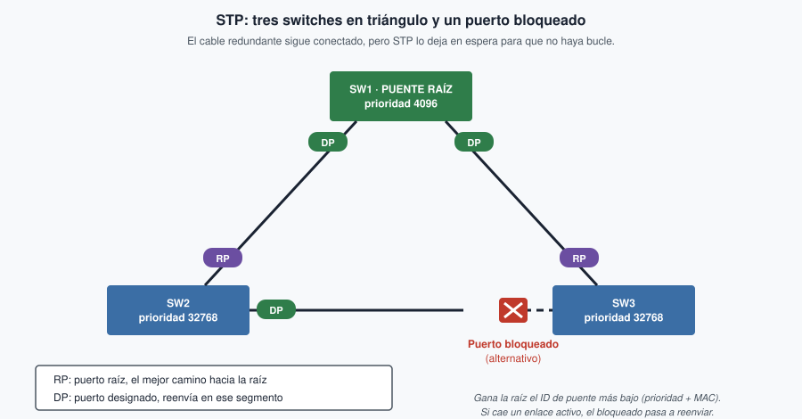
Para decidir qué bloquear, los switches intercambian mensajes llamados BPDU (Bridge Protocol Data Unit) y siguen tres pasos:
- Eligen el puente raíz. Cada switch tiene un ID de puente formado por una prioridad (32768 por defecto) y su MAC. Gana el ID más bajo: primero se mira la prioridad y, si empatan, la MAC más baja. Por eso conviene bajar a mano la prioridad del switch central para que sea él la raíz y no el más antiguo del armario.
- Cada switch elige su puerto raíz (RP, root port): el que tiene el camino de menor coste hasta la raíz. El coste depende de la velocidad del enlace: cuanto más rápido, menor.
- En cada segmento se elige un puerto designado (DP, designated port), el que reenvía hacia ese segmento. Todos los puertos de la raíz son designados. Los puertos que no son ni raíz ni designados se bloquean.
En el STP clásico, un puerto pasa por los estados de bloqueo, escucha, aprendizaje y reenvío, y desde que algo cambia hasta que la red vuelve a converger pueden pasar entre 30 y 50 segundos. Por eso, cuando conectas un PC a un switch con STP, el led permanece en ámbar durante unos segundos antes de pasar a verde. RSTP (Rapid STP, IEEE 802.1w) hace lo mismo pero converge en pocos segundos, y es lo que usan por defecto los switches actuales.
Ejemplo de aula. Si alguien conecta en el aula un latiguillo con los dos extremos en el mismo switch no gestionable, sin STP, se produce una tormenta de difusión en segundos: todos los leds parpadean a la vez y la red queda inoperativa. Con un switch gestionable con STP activado, ese puerto se bloquea y la red sigue funcionando.
Para la certificación CCNA
show spanning-tree muestra quién es la raíz, el rol de cada puerto (Root, Desg, Altn) y su estado. La prioridad se cambia con spanning-tree vlan 1 priority 4096 y debe ser múltiplo de 4096.
Errores frecuentes
Pensar que STP desconecta físicamente el cable: lo bloquea de forma lógica y el piloto puede seguir encendido. Decir que gana la raíz el switch con la MAC más alta o el más moderno: gana el ID de puente más bajo. Desactivar STP «para que el piloto se ponga verde antes».
EtherChannel (visión breve)¶
A veces un solo enlace entre dos switches se queda corto. Si pones dos cables, STP bloquea uno y no ganas nada. EtherChannel, o agregación de enlaces, une varios enlaces físicos (hasta ocho activos) en un único enlace lógico. STP lo ve como uno solo y no bloquea ninguno, el tráfico se reparte entre los cables y, si uno falla, los demás siguen funcionando. Se negocia con LACP (Link Aggregation Control Protocol, estándar IEEE 802.3ad) o con PAgP (Port Aggregation Protocol, propietario de Cisco), y se usa entre switches o entre un switch y un servidor con varias tarjetas. Todos los puertos del grupo tienen que tener la misma velocidad y el mismo dúplex.
Actividades¶
Formato de entrega
Las entregas en Aules son obligatorias en Markdown (.md). No se aceptan PDF.
Nombre del archivo: AC4XX.md o PR4XX.md (sustituye XX por el número). Respeta la fecha de vencimiento.
Escribiremos los .md con Visual Studio Code.
Cómo empezar
- Guía de Markdown: tutorialmarkdown.com/guia
- Documentación de Visual Studio Code: code.visualstudio.com/docs
AC401 — Leer una trama y una MAC¶
-
AC401. (RA1 // CE1a, CE1c // AC 0–1). Analiza esta trama, copiada de una captura tal como la muestra Wireshark (sin preámbulo ni FCS), y después tu propia NIC.
ff ff ff ff ff ff 02 5e 10 aa 3c 01 08 06 00 01 08 00 06 04 00 01 02 5e 10 aa 3c 01 c0 a8 0a 15 00 00 00 00 00 00 c0 a8 0a 01 00 00 00 00 00 00 00 00 00 00 00 00 00 00 00 00 00 00- Separa los campos de la cabecera Ethernet: MAC destino, MAC origen y tipo. ¿Qué protocolo va dentro?
- Clasifica la MAC de destino (unicast, multicast o broadcast) y la de origen (universal o local). Justifica cada respuesta con los bits del primer byte.
- Cuenta los bytes del campo de datos. ¿Por qué hay ceros al final?
- Con
ipconfig /all(Windows) oip link(Linux), localiza la MAC de tu adaptador cableado y la del Wi‑Fi, si lo tiene. Escribe solo los tres primeros bytes (sustituye el resto porXX), busca el fabricante en el registro público de OUI del IEEE y di si es universal o local.
AC402 — Acceso al medio y dúplex¶
-
AC402. (RA1 // CE1a // AC 0–1). Explica, con tus palabras y un ejemplo del aula para cada caso:
- Qué tienen en común y en qué se diferencian CSMA/CD y CSMA/CA, y por qué Wi‑Fi no puede usar CSMA/CD.
- Por qué en un enlace full dúplex PC–switch no hay colisiones.
- Qué relación hay entre el tiempo de ranura de 512 bits y la trama mínima de 64 bytes.
- Qué síntomas da un desajuste de dúplex y cómo lo comprobarías.
AC403 — El switch paso a paso¶
-
AC403. (RA1 // CE1a, CE1c // AC 0–1). Un switch de cuatro puertos acaba de arrancar con la tabla vacía. En Fa0/1 está PC-A (
0A:00:00:00:00:0A), en Fa0/2 PC-B (0A:00:00:00:00:0B) y en Fa0/3 PC-C (0A:00:00:00:00:0C). En Fa0/4 hay un hub con PC-D (0A:00:00:00:00:0D) y PC-E (0A:00:00:00:00:0E). Se envían, en este orden, estas tramas:- PC-A → PC-B
- PC-B → PC-A
- PC-C →
FF:FF:FF:FF:FF:FF - PC-D → PC-E
- PC-A → PC-E
- PC-E → PC-A
- PC-D → PC-E
Para cada trama, haz una tabla con tres columnas: qué entrada aprende o refresca el switch, qué hace con la trama (inundar, reenviar o filtrar) y por qué puertos sale. Al final, escribe la tabla MAC completa y responde: ¿qué equipos reciben físicamente la trama 4?
AC404 — Bucles, STP y EtherChannel¶
-
AC404. (RA1 // CE1a // RA4 // CE4g // AC 0–1). Tres switches en triángulo: SW-A con prioridad 32768 y MAC
0000.0c00.000a, SW-B con prioridad 32768 y MAC0000.0c00.0005, y SW-C con prioridad 28672 y MAC0000.0c00.00ff.- ¿Cuál será el puente raíz? Justifica la comparación.
- Describe qué ocurriría en esa red si STP estuviera desactivado y un PC enviara un broadcast.
- ¿Qué diferencia hay entre STP y RSTP y por qué importa en un aula?
- Si quieres duplicar el ancho de banda entre SW-A y SW-B, ¿por qué no basta con poner un segundo cable y qué configurarías?
PR401 — Dominios y conmutación en una topología¶
| Campo | Valor |
|---|---|
| Código | PR401 |
| UP / tema | T4 — Capa de enlace |
| RA principal | RA1 |
| CE de cobertura | CE1a, CE1c |
| Sesiones estimadas | 2 |
| Instrumento | Rúbrica 0–10 |
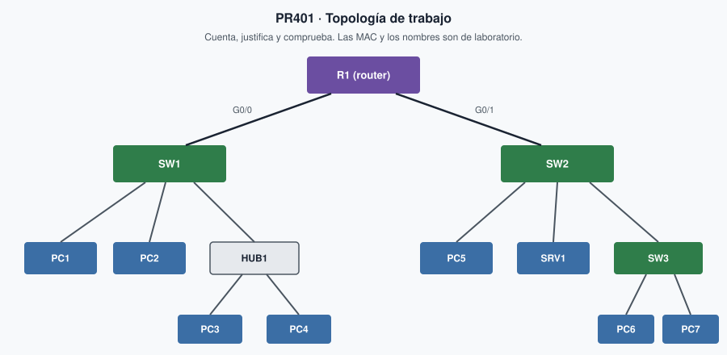
- PR401. Individual. Trabaja sobre esta topología y entrega
PR401.mdcon las respuestas razonadas. No basta con el número: tienes que explicar por qué.
Enunciado:
- Cuenta los dominios de colisión y los dominios de difusión. Márcalos sobre el diagrama (puedes redibujarlo en Excalidraw o draw.io) y justifica el conteo.
- PC1 envía un broadcast. ¿Qué equipos lo reciben? ¿Llega a PC5? ¿Por qué?
- PC3 envía una trama unicast a PC4. ¿Qué equipos la reciben físicamente? ¿Qué hace SW1 con ella si ya conoce a PC4?
- Con todas las tablas vacías, PC6 envía una trama a SRV1 y SRV1 responde. Escribe qué entradas aprenden SW3 y SW2 con cada trama y por qué puertos sale cada una.
- ¿En qué enlace de esta red podría haber colisiones hoy? Propón un cambio de equipo que las elimine y di cuántos dominios de colisión habría después.
| Criterio (rúbrica) | Descripción | Puntos |
|---|---|---|
| Conteo de dominios | Colisión y difusión correctos y marcados | 0–3 |
| Broadcast y unicast | Preguntas 2 y 3 razonadas | 0–2 |
| Aprendizaje de tablas | Pregunta 4: entradas y puertos correctos | 0–3 |
| Mejora propuesta | Pregunta 5 justificada | 0–1 |
Claridad del .md |
Orden, diagrama y redacción | 0–1 |
| Total | /10 |
PR402 — Packet Tracer: tabla MAC y STP¶
| Campo | Valor |
|---|---|
| Código | PR402 |
| UP / tema | T4 — Capa de enlace |
| RA principal | RA4. Apoyo RA1 |
| CE de cobertura | CE4h · CE1a, CE1c |
| Sesiones estimadas | 2 en clase; se termina en casa |
| Instrumento | Rúbrica 0–10 |
- PR402. Individual, en Cisco Packet Tracer. Vas a comprobar en la simulación cómo aprende un switch y cómo STP rompe un bucle.
Enunciado (pasos):
- Coloca tres switches 2960 (SW1, SW2 y SW3) y únelos en triángulo con cables directos entre puertos GigabitEthernet. Conecta dos PC a cada switch.
- Asigna a los seis PC una IP de la red
192.168.40.0/24(de.11a.16) con máscara255.255.255.0. Espera a que todos los pilotos pasen de ámbar a verde y anota cuánto tardan. - En la CLI de SW1, ejecuta
show mac address-table. Hazpingdesde un PC de SW1 a uno de SW3 y repite el comando. Explica las entradas nuevas y por qué puerto aparece cada MAC. - Ejecuta
clear mac address-table dynamic, pasa al modo Simulación, filtra solo ARP e ICMP y repite elping. Captura el momento en que la primera trama se inunda y el momento en que la respuesta ya va solo por un puerto. - Ejecuta
show spanning-treeen los tres switches. Indica cuál es el puente raíz, el rol de cada puerto y cuál está bloqueado. Comprueba que coincide con lo que predice la regla del ID de puente más bajo. - Haz que SW2 sea la raíz con
spanning-tree vlan 1 priority 4096y comprueba qué puerto se bloquea ahora. - Apaga con
shutdownuno de los enlaces activos y observa cómo el puerto bloqueado pasa a reenviar. Comprueba conpingque la red sigue funcionando.
Entrega: PR402.md con las capturas y la explicación de cada paso, más el archivo .pkt.
| Criterio (rúbrica) | Descripción | Puntos |
|---|---|---|
| Topología y direccionamiento | Triángulo y PC configurados y con conectividad | 0–2 |
| Tabla MAC | Pasos 3 y 4 explicados con capturas | 0–3 |
| STP | Raíz, roles y puerto bloqueado justificados | 0–3 |
| Cambio de raíz y reconvergencia | Pasos 6 y 7 con capturas | 0–1 |
Informe .md |
Orden, capturas legibles y redacción | 0–1 |
| Total | /10 |
Para el examen¶
La capa de enlace trabaja salto a salto: la trama va de un equipo a su vecino y se rehace en cada router, mientras el paquete IP mantiene sus direcciones. Se divide en LLC (802.2, común) y MAC (802.3 en cable, 802.11 en Wi‑Fi). La trama Ethernet lleva preámbulo y SFD (8 bytes, no cuentan), MAC destino y MAC origen (6 + 6), tipo (2; 0x0800 IPv4, 0x0806 ARP), datos de 46 a 1500 bytes y FCS de 4 bytes con CRC‑32; mide entre 64 y 1518 bytes. El CRC detecta errores y la trama dañada se descarta; no se corrige.
La MAC tiene 48 bits: OUI del fabricante (3 bytes) y tarjeta (3 bytes). El bit I/G distingue unicast de multicast, el bit U/L distingue universal de local, y FF:FF:FF:FF:FF:FF es broadcast. CSMA/CD escucha, transmite, detecta la colisión, envía atasco y espera un tiempo aleatorio; solo se usa en half dúplex. Wi‑Fi usa CSMA/CA con ACK. En full dúplex no hay colisiones.
El switch aprende de la MAC de origen y decide con la de destino: reenvía si la conoce, inunda si es broadcast o desconocida y filtra si está en el mismo puerto. Un dominio de colisión por puerto y uno de difusión para todo el switch (salvo VLAN). STP elige el puente raíz por el ID más bajo (prioridad + MAC) y bloquea puertos para evitar bucles; RSTP converge más rápido. EtherChannel agrupa enlaces en uno lógico.
CE clave de este tema: CE1a, CE4g.
Autocheck del tema¶
Hazlo después de entregar el cuestionario inicial en Aules.
- V/F. La trama Ethernet conserva sus direcciones MAC desde el PC hasta un servidor de Internet.
- ¿Qué subcapa es común a Ethernet y a Wi‑Fi y en qué norma se recoge?
- Ordena los campos de la trama Ethernet: FCS · MAC origen · preámbulo · tipo · MAC destino · datos · SFD.
- La trama Ethernet mínima mide…
a) 46 bytes · b) 64 bytes · c) 72 bytes · d) 1518 bytes - V/F. Si el receptor detecta un error con el CRC, corrige los bits dañados.
- ¿Qué protocolo va dentro de una trama con tipo
0x0806? - Clasifica estas MAC en unicast, multicast o broadcast:
00:00:0C:12:34:56·01:00:5E:00:00:FB·FF:FF:FF:FF:FF:FF. - ¿Qué indica que el segundo dígito hexadecimal de una MAC sea 2, 6, A o E?
- ¿Qué comando usarías en Windows para ver la MAC de tus adaptadores?
- Empareja: TDM · paso de testigo · CSMA/CD con: (a) contienda · (b) particionado del canal · (c) toma de turnos.
- V/F. En un enlace full dúplex PC–switch se usa CSMA/CD.
- ¿Por qué Wi‑Fi usa CSMA/CA y no CSMA/CD?
- ¿De qué dirección aprende el switch, de la de origen o de la de destino?
- Un switch recibe una trama unicast para una MAC que no está en su tabla. ¿Qué hace?
- ¿Qué método de conmutación comprueba el FCS antes de reenviar?
- V/F. Un switch de 24 puertos sin VLAN tiene 24 dominios de difusión.
- Nombra los tres problemas que provoca un bucle de capa 2 sin STP.
- Dos switches tienen prioridad 32768; uno tiene la MAC
0000.0c00.0001y el otro0000.0c00.0002. ¿Cuál será la raíz? - ¿Qué hace STP con el cable redundante: lo desconecta o lo bloquea?
- ¿Qué ventaja tiene EtherChannel frente a poner dos cables sueltos entre dos switches?
Soluciones
Las soluciones se publicarán aquí cuando cierre el cuestionario inicial en Aules.
Vídeos recomendados¶
Pablo Hidalgo explica cómo trabaja un switch Ethernet de capa 2 (CCNA v1.1, lección 6): tabla MAC, unicast y broadcast. Si ya lo viste en el Tema 3, vuelve a verlo ahora con la trama y el diagrama de decisión delante.
El resto de lecciones de la misma playlist (CCNA Completo v1.1) amplían Ethernet, STP y EtherChannel.
Glosario¶
trama PDU de la capa de enlace: cabecera con direcciones MAC, datos y FCS. Solo viaja entre equipos vecinos.
LLC Logical Link Control, control de enlace lógico (IEEE 802.2). Subcapa superior de la capa 2, común a todas las tecnologías de LAN.
MAC Media Access Control, control de acceso al medio. Subcapa inferior de la capa 2 (802.3, 802.11) y, por extensión, la dirección de 48 bits que identifica cada interfaz.
OUI Organizationally Unique Identifier: los tres primeros bytes de la MAC, asignados por el IEEE a cada fabricante.
FCS Frame Check Sequence: últimos 4 bytes de la trama, con el resultado del CRC.
CRC Cyclic Redundancy Check, comprobación de redundancia cíclica. Cálculo que permite detectar errores en la trama; no los corrige.
MTU Maximum Transmission Unit: tamaño máximo de datos de una trama; 1500 bytes en Ethernet.
broadcast
Difusión: trama dirigida a todos los equipos del dominio de difusión. MAC FF:FF:FF:FF:FF:FF.
CSMA/CD Carrier Sense Multiple Access with Collision Detection: método de acceso del Ethernet half dúplex. Escucha, transmite, detecta colisiones y reintenta tras un tiempo aleatorio.
CSMA/CA Carrier Sense Multiple Access with Collision Avoidance: método de acceso de Wi‑Fi. Intenta evitar las colisiones y confirma cada trama con un ACK.
switch Conmutador de capa 2: aprende MAC de origen y reenvía cada trama por el puerto del destino.
tabla MAC Tabla del switch (CAM) que relaciona cada MAC con un puerto. Sus entradas caducan si no hay tráfico.
dominio de colisión Conjunto de interfaces que pueden colisionar entre sí. El switch crea uno por puerto.
dominio de difusión Conjunto de interfaces a las que llega un broadcast. Lo dividen el router y las VLAN.
STP Spanning Tree Protocol (IEEE 802.1D): protocolo que bloquea puertos para eliminar bucles de capa 2. Su versión rápida es RSTP (802.1w).
BPDU Bridge Protocol Data Unit: mensaje que intercambian los switches para calcular el árbol de STP.
EtherChannel Agregación de varios enlaces físicos en uno lógico. Se negocia con LACP (estándar) o PAgP (Cisco).
Relación con el resto del módulo¶
El Tema 1 presentó la MAC, el switch y los dominios; el Tema 2, el medio y el dúplex; el Tema 3 montó el switch en el rack. Aquí has visto qué hace ese switch con cada trama. El Tema 5 sube a la capa de red: IP, máscaras y ARP, el protocolo que traduce una IP en la MAC que va en la trama. El Tema 6 divide el switch con VLAN usando la etiqueta 802.1Q que has visto en la trama.
Referencias rápidas¶
- Sitio del módulo: fjavier-hernandez.github.io/ral
- Diagramas: Excalidraw, draw.io (diagrams.net), Dia
- Simulación: Cisco Packet Tracer
- Registro de OUI: IEEE Registration Authority
- Entregas: Visual Studio Code + Markdown
- Normas: Normas del taller
- Playlist CCNA (Pablo Hidalgo): CCNA Completo v1.1